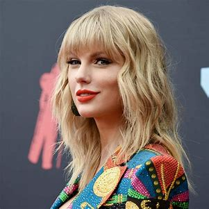

Dit zijn de top 4 artiesten van 2022.
- 1. Bad Bunny
- 2. Taylor Swift
- 3. Drake
- 4. The Weeknd
Bad Bunny
Bad Bunny is een Puerto Ricaanse rapper die voor het derde jaar op rij de meest gestreamde artiest ter wereld. Hij is alleen niet de meest gestreamde artiest van Nederland, dat is namelijk onze landgenoot Antoon. Ook het meest gestreamde nummer wereldwijd scoorde Bad Bunny niet; dat was As it Was van Harry Styles. Wel had de zeer populaire Puerto Ricaan drie nummers in de top tien van meest gestreamde nummers wereldwijd: op nummer 4 Me Porto Bonito, op nummer 5 Tití Me Preguntó en op nummer 9 Ojitos Lindos.
Taylor Swift
De 33-jarige Amerikaanse zangeres stond dit jaar volop in de belangstelling. Ze bracht haar tiende album uit: Midnights. Dit album was goed voor een record: meest gestreamde album op één dag. Nog een record: Swift bezette als eerste artiest ooit de eerste 10 plaatsen van de Billboard Hot 100 lijst. Het nummer Anti-Hero werd al meer dan 400.000.000 keer beluisterd op Spotify. Taylor Swift heeft dit jaar dus al heel wat mijlstones bereikt in haar carriere zal gegarendeerd niet snel de handoek in de ring gooien.
Drake
Rapper Drake is al jaren een vertrouwde naam op overzichten van meest beluisterde artiesten. Hij scoort gemiddeld dik 67 miljoen luisteraars op Spotify per maand. Zijn samenwerking met 21 Savage, Jimmy Cooks is op dit moment zijn meest beluisterde nummer. Het werd zo’n 367 miljoen keer beluisterd. Drake is zijn carriere begonnen met acteren bij Nickelodeon en heeft net zoals Ariana Grande zijn carriere voortgezet in de muziekwereld.
The Weeknd
De Canadese artiest van Ethiopische afkomst The Weeknd bracht begin dit jaar het succesvolle album Dawn FM uit. Dawn FM werd uitgebracht op 7 januari en heeft een record gebroken van meeste luisteraars per maand met maar liefst 85.6 miljoen luisteraars. Zijn hit Blinding Lights uit 2019 is zijn grootste succes op Spotify. Het nummer is 3,2 miljard keer geluisterd. The Weeknd is op het moment op tour en zal in juni in Nederland zijn en optreden in de Johan Cruijff Arena.
benieuwd naar Nederlandse artiesten?